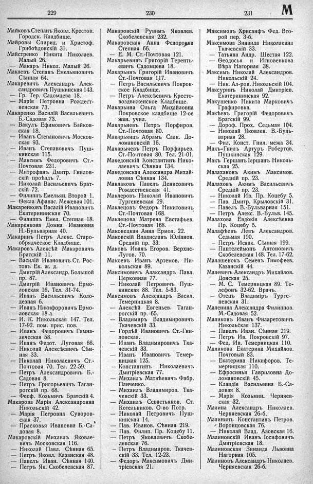

Лист источника 427
Скан

Распознанный текст
229
Майковъ Степанъ Яковл. Крестов.
Городск. Кладбище.
Майровы Спирид. и Христоф.
Грибоѣдовскій 31.
Майстренко Никита Николаев.
Малый 26.
— Макаръ Никол. Малый 26.
Макаевъ Степанъ Емельяновичъ
Сѣнная 64.
Макаревичъ Александръ Алек-
сандровичъ Пушкинская 143.
— Гр. Тер. Садомцева 18.
— Марія Петровна Рождест-
венская 73.
Макаренко Василій Васильевичъ
Б.-Садовая 73.
— Вакулъ Ефимовичъ Байков-
ская 18.
— Иванъ Степановичъ Москов-
ская 93.
— Иванъ Степановичъ Пуш-
кинская 115.
— Максимъ Федоровичъ Ст.-
Почтовая 231.
— Митрофанъ Дмитр. Гнилов-
скій проѣздъ 7.
— Николай Васильевичъ Брат-
скій 72.
— Филиппъ Емельян. Второй 1.
— Ѳекла Афанас. Межевая 101.
Макаренковъ Василій Ивановичъ
Екатерининская 70.
— Филиппъ Емел. Степная 18.
Макаренкова Домна Ивановна
Н.-Бульварная 40.
Макаринъ Петръ Алекс. Старо-
обрядческое Кладбище.
Макаровъ Алексѣй Макаровичъ
Братскій 11.
— Василій Ивановичъ Ст. Рос-
товъ Ек. ж. д.
— Дмитрій Александр. Большой
пр. 87.
— Дмитрій Ивановичъ Ермо-
ловская 16. Тел. 31-74.
— Иванъ Васильевичъ Коло-
дезная 6.
— Иванъ Никифоровичъ Ермо-
ловская 18-а.
— И. К. Никольская 147. Тел.
17-92. пом. прис. пов.
— Иванъ Федоровичъ Гимна-
зическая 58.
— Иванъ Федот. Луговая 66.
— Николай Алексѣевичъ Сѣн-
ная 33.
— Николай Николаевичъ Ст.-
Почтовая 70. Тел. 22-59.
— Петръ Александровичъ Б.-
Садовая 8.
— Петръ Григорьевичъ Таган-
рогскій пр. 68.
— Феоф. Козьмичъ Братскій 4.
Макарова Марія Александровна
Никольскій 42.
— Марія Петровна Суворов-
ская 37.
— Прасковья Ивановна Б.-Са-
довая 8.
Макаровскій Михаилъ Яковле-
вичъ Московская 116.
— Николай Павл. Сѣнная 65.
— Петръ Яковл. Казанская 48.
— Павелъ Иван. Сѣнная 140.
— Петръ Як. Скобелевская 87.
230
Макаровскій Рувимъ Яковлев.
Скобелевская 232.
Макаровская Анна Федоровна
Степная 66.
— Е. М. Ст.-Почтовая 121.
Макарьевичъ Григорій Теренть-
евичъ Садомцева 18.
Макарьинъ Григорій Ивановичъ
Ст.-Почтовая 117.
— Петръ Васильевичъ Покров-
ское Кладбище.
— Петръ Алексѣевичъ Кресто-
воздвиженское Кладбище.
Макарьина Ольга Михайловна
Покровское кладбище 12-ое
жен. учил.
Макарьневъ Петръ Порфиров.
Ст.-Почтовая 80.
Макарьянцъ Абрамъ Саак. До-
ломановскій 16.
Макарычевъ Петръ Порфирьев.
Ст.-Почтовая 80. Тел. 21-01.
Македонскій Константинъ Нико-
лаевичъ Сѣнная 134.
Македонская Александра Михай-
ловна Сѣнная 134.
Маклаковъ Павелъ Денисовичъ
Рождественская 41.
Маклеровъ Николай Ивановичъ
Тургеневская 29.
Маклецовъ Федоръ Никитовичъ
Ст.-Почтовая 168.
Маклецова Матрена Евстафьев.
Ст.-Почтовая 168.
Маковецкая Анна Ермол. 22.
Маковскій Владиславъ Юліанов.
Средній пр. 33.
Маковъ Иванъ Егоров. Верхне-
Лугов. 70.
Макоевъ Иванъ Артемов. Ни-
кольская 89.
Максимовичъ Алаксандръ Павл.
Церковная 77.
— Николай Петровичъ Пуш-
кинская 88. Тел. 5-83.
Максимовъ Александръ Васил.
Темерницкая 8.
— Алексѣй Евгеньев. Таган-
рогскій пр. 65.
— Владимиръ Владимировичъ
Ткачевскій 33.
— Гордѣй Ивановичъ Ст.-Гни-
ловская.
— Иванъ Владимировичъ Тка-
чевскій 33.
— Иванъ Ивановичъ Темер-
ницкая 125.
— Константинъ Николаевичъ
Дмитріевская 77.
— Михаилъ Матвѣевичъ Фабр.
Панченко.
— Михаилъ Владимиров. Тка-
чевскій 33.
— Михаилъ Севастьянов. Ст.
Котельников. О-во Потр.
— Николай Петровичъ Пуш-
кинская 14.
— Пав. Иванов. Сѣнная 219.
— Пав. Филип. Пр. Коцебу 11.
— Петръ Яковлевичъ Скобе-
левская 76.
— Петръ Владимиров. Ткачев-
скій 33. Тел. 12-23.
— Федоръ Максимовичъ Дми-
тріевская 21.
231 М
Максимовъ Хрисанфъ Фед. Вто-
рой пер. 3-б.
Максимова Зинаида Николаевна
Ткачевскій 33.
— Татьяна Андр. Шестая 122.
— Ѳеодосья и Игновенкова
Вѣра Нагорная 38.
Максимъ Николай Александров.
Никольскій 24.
— Ник. Ал-ров. Никольскій 104.
Максуринъ Николай Дмитріев.
Екатерининская 92.
Макушенко Никита Марковичъ
Графировка.
Макѣевъ Григорій Федоровичъ
Братскій 99.
— Дороф. Прох. Седьмая 104.
— Николай Яковлев. В.-Буль-
варная 28.
— Фил. Конст. Гнил. межа 34.
Макъ-Гнилъ Артуръ Робертов.
Пушкинская 129.
Макъ Гершанъ Іершанъ Николь-
ская 25.
Малахановъ Акимъ Максимов.
Средній пр. 23.
Малаховъ Акимъ Васильевичъ
Средній пр. 23.
— Николай Ив. Пр. Коцебу 5.
— Пав. Дмитр. Крыловскій 31.
— Павелъ В.-Бульварная 151.
— Петръ Алекс. В.-Бульв. 145.
Малахова Евдокія Алексѣевна
Пр. Коцебу 5.
Малафѣевъ Левъ Александров.
Седьмая 190.
— Петръ Исаак. Сѣнная 199.
— Пантелеймонъ Антоновичъ
Скобелевская 148. Тел. 17-62.
Малашенокъ Семенъ Тимофеев.
Казанскій 44.
Малевичъ Александръ Михайлов.
Донская 25.
— М. С. Темерницкая 89. Те-
лефонъ 32-62. Врачъ.
— Отецъ Владиміръ Турге-
невская 31.
Маленина Александра Филиппов.
М.-Садовая 52.
Маликовъ Иванъ Филаретовичъ
Никольская 137.
— Павелъ Иван. Сѣнная 219.
— Петръ Ив. Покровскій 97.
— Фед. Ив. Темерницкая 110.
Маликова Екатерина Михайлов.
Почтовый 83.
— Екатерина Никифоров. Те-
мерницкая 110.
— Ефросинья Гавриловна До-
ломановскій 45.
— Клавдія Васильевна Б.-Са-
довая 8.
— Марія Козьмин. Черняев-
ская 32.
Малина Александръ Николаев.
Черняевская 26-б.
Малининъ Константинъ Петров.
Воронцовская 76.
— Николай Влад. Азовская 16.
Малиновскій Иванъ Іосифовичъ
Дмитріевская 18.
Малиновская Зинаида Львовна
Нагорная 105.
Малиновъ Александръ Николаев.
Черняевская 26-б.